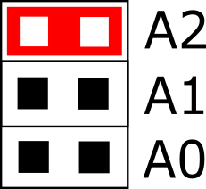
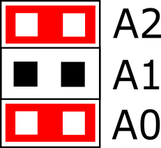
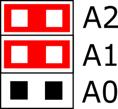

Installing the DAQ HAT board
Installing a single board
Power off the Raspberry Pi.
Locate the 4 standoffs. A typical standoff is shown here:

Attach the 4 standoffs to the Raspberry Pi by inserting the male threaded portion through the 4 corner holes on the Raspberry Pi from the top and securing them with the included nuts from the bottom.
Install the 2x20 receptacle with extended leads (MCC provides a Samtec SSQ-120-03-T-D or equivalent) onto the Raspberry Pi GPIO header by pressing the female portion of the receptacle onto the header pins, being careful not to bend the leads of the receptacle. The 2x20 receptacle looks like:

The HAT must be at address 0. Remove any jumpers from the address header locations A0-A2 on the HAT board.
Insert the HAT board onto the leads of the 2x20 receptacle so that the leads go into the holes on the bottom of the HAT board and come out through the 2x20 connector on the top of the HAT board. The 4 mounting holes in the corners of the HAT board must line up with the standoffs. Slide the HAT board down until it rests on the standoffs.
Insert the included screws through the mounting holes on the HAT board into the threaded holes in the standoffs and lightly tighten them.
Installing multiple boards
Follow steps 1-6 in the single board installation procedure for the first HAT board.
Connect all desired field wiring to the installed board - the screw terminals will not be accessible once additional boards are installed above it.
Install the standoffs of the additional board by inserting the male threaded portions through the 4 corner holes of the installed HAT board and threading them into the standoffs below.
Install the next 2x20 receptacle with extended leads onto the leads of the previous 2x20 receptacle by pressing the female portion of the new receptacle onto the previous receptacle leads, being careful not to bend the leads of either receptacle.
Install the appropriate address jumpers onto address header locations A0-A2 of the new HAT board. The recommended addressing method is to have the addresses increment from 0 as the boards are installed, i.e. 0, 1, 2, and so forth. There must always be a board at address 0. The jumpers are installed in this manner (install jumpers where “Y” appears):
Address |
A0 |
A1 |
A2 |
Jumper Setting |
0 |

|
|||
1 |
Y |

|
||
2 |
Y |

|
||
3 |
Y |
Y |

|
|
4 |
Y |
 | ||
5 |
Y |
Y |
 | |
6 |
Y |
Y |
 | |
7 |
Y |
Y |
Y |

|
{kind=link}
{kind=link}
{kind=link}
Insert the new HAT board onto the leads of the 2x20 receptacle so that the leads go into the holes on the bottom of the HAT board and come out through the 2x20 connector on the top of the HAT board. The 4 mounting holes in the corners of the HAT board must line up with the standoffs. Slide the HAT board down until it rests on the standoffs.
Repeat steps 1-5 for each board to be added.
Insert the included screws through the mounting holes on the top HAT board into the threaded holes in the standoffs and lightly tighten them.